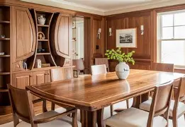

About Us
Founded by Jason Bokaba in 2022, Crafted wood carpentry is a small workshop located in Soshanguve with the objective to provide clients custom wood worked pieces at an affordable price. They aim to give high-quality pieces such as furniture, doors, and cupboards and a quality service to their clients whilst building trust and paving their way towards being a recognised carpentry business in Gauteng.

Our Mission
The main target audience for the workshop is people who are looking to renovate their houses and those seeking custom wood worked pieces, and businesses that require wooden products.
Custom Built Home Furniture

Our Vision
The goal of the website will be to help the business reach its desired vision to become of one the recognised carpentry businesses in Gauteng. This will be achieved by providing an online presence to reach more customers and to be able to market online effectively